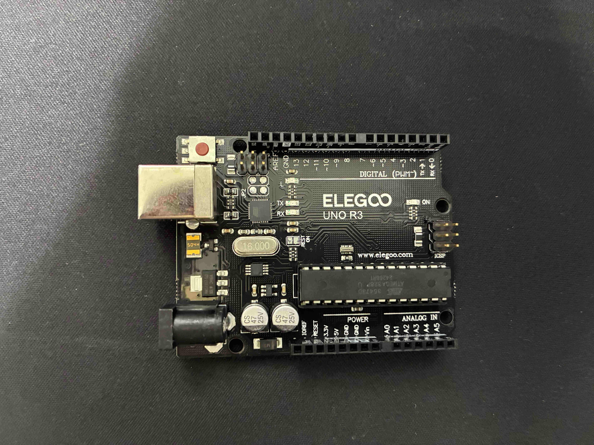
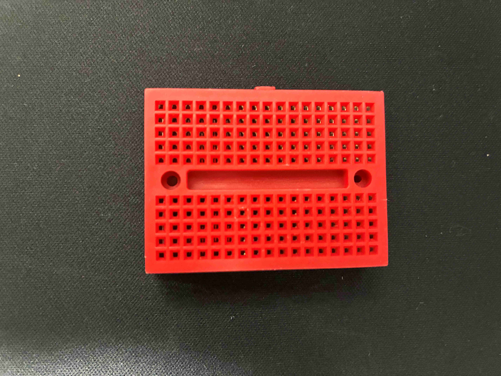
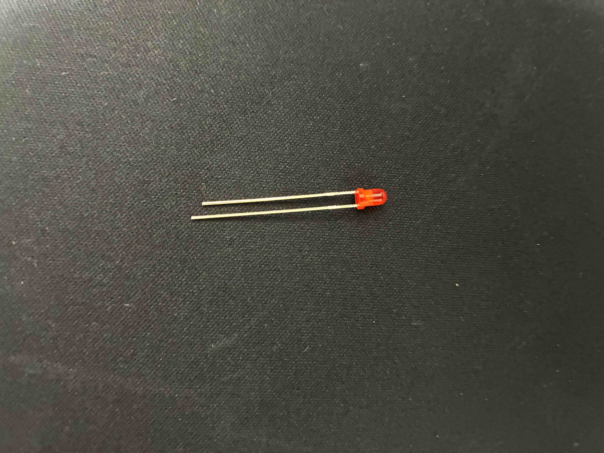
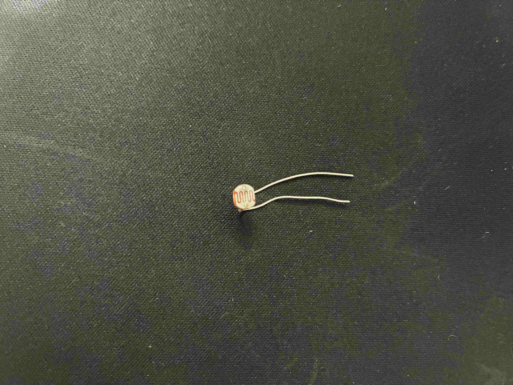
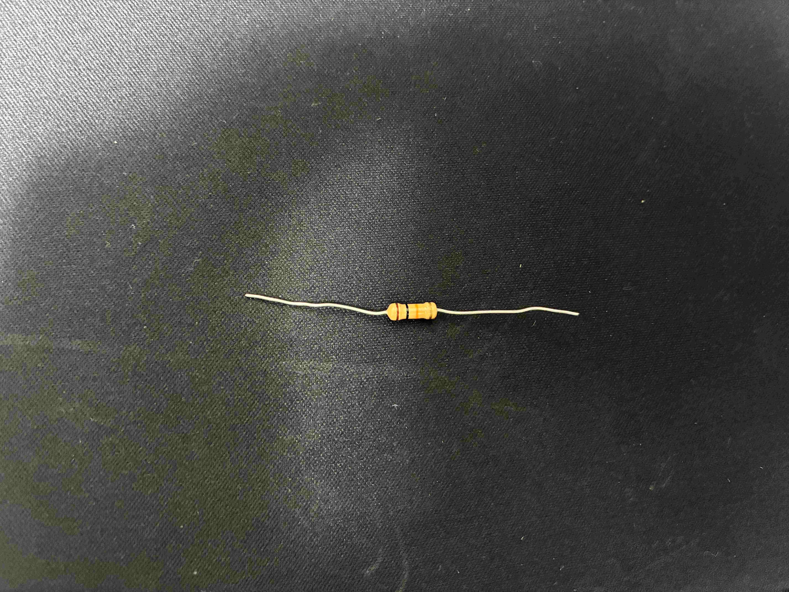

Arbuinoとは
センサーやモーターなどを制御できる、プログラム可能な電子工作向けマイコンボード

ブレットボード
電子部品や配線を差し込むだけで回路を構成できる実験用基板で
回路の試作や動作確認を繰り返し行うことができる便利な電子工作用の道具

LED
別名発光ダイオードといい、電流を流すと光を出す半導体素子
長い方が＋、短い方がー。+はアノード ーはカソード

CdS（明るさ）センサー
光の強さによって電気抵抗が変化する性質を利用した明るさ検知用のセンサー
暗いと抵抗が大きくなり、明るいと小さくなる

抵抗器
電気の流れ（電流）を制限・調整するための電子部品
